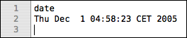
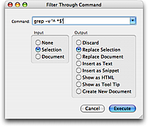
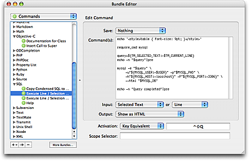

The shell is a scripting language used to piece together various programs (shell commands), and often in an interactive way, e.g. as done when launching Terminal and entering commands to execute.
For a thorough introduction to the shell scripting language have a look at this shell tutorial provided by Apple.
TextMate allows shell commands to be executed in different contexts. Some of the more useful options are:
In the current document, either press ⌃R with no selection to run the current line as a shell command, or select one or more lines and use ⌃R to run the selection as a shell script (it supports shebang as well).

From the Text menu you can select Filter Through Command… (⌥⌘R) which opens a panel where you can enter a shell command to run and set what should be given as input (stdin) plus what to do with the output of the command (often you want to set input to the selected text and let the output replace the selection).

Commands via the Bundle Editor. The first two options are mostly for one-shot commands, whereas commands created in the Bundle Editor are for stuff you want to run again later. The options here are the same as those of option 2, i.e. you can set what to do with input/output, even have the output shown as a tool tip (e.g. for commands which lookup help for the current word) or HTML (e.g. for commands which build the project and show results, incrementally). You can also set that documents should be saved before executing the command and give the command a key equivalent or tab trigger.

When running a command from Terminal, the shell will use the value of the PATH variable to locate it (when it is specified without an absolute location). For example ruby is located in /usr/bin/ruby and svn is (for me) located in /opt/local/bin/svn.
TextMate would normally inherit the value of PATH from Finder, which has only a few search locations specified, so this is not very useful.
Instead TextMate runs a custom script (named bash_init.sh located in $TM_SUPPORT_PATH/lib) before executing the actual shell command(s). This custom script contains the following code:
if [ ! -f "$TM_BASH_INIT" ]; then
# First read system-wide profile
[ -f /etc/profile ] && . /etc/profile
# Then find the first local profile
if [ -f ~/.bash_profile ]; then . ~/.bash_profile
elif [ -f ~/.bash_login ]; then . ~/.bash_login
elif [ -f ~/.profile ]; then . ~/.profile
fi
fi
What this means is that unless you create your own custom bash_init.sh script then TextMate will get the path which would occur by first sourcing (executing) /etc/profile and then the first bash initialization file found in your home folder.
If you do not normally use the bash shell, you may have to setup the path you normally have (in tcsh, zsh, or similar). For example create a ~/.bash_profile file containing these lines:
[ -f /etc/profile ] && . /etc/profile
[ -f ~/.bashrc ] && . ~/.bashrc
export PATH="$HOME/bin:/opt/local/bin:$PATH"
This will add ~/bin and /opt/local/bin to the path. Notice that $HOME is used instead of ~, that is because inside double-quoted strings ~ is not expanded but $HOME is.
Important: commands which use the shell shebang syntax to call a specific interpreter (e.g. #!/usr/bin/ruby or #!/usr/bin/env ruby on the first line of the command) do not go through this startup procedure, so these will not get the extended path. For these it is possible to augment the path by setting PATH in ~/.MacOSX/environment.plist which is a property list that contains key/value pairs corresponding to environment variables read by Finder when you login.
So if you want to add /opt/local/bin to the path then create ~/.MacOSX/environment.plist and add the following:
{ PATH = "/opt/local/bin:/usr/bin:/bin:/usr/sbin:/sbin"; }
After having created (or edited) this file you will need to re-login to your user account for the change to take effect.
Note that in this file you are not able to refer to $HOME so you will instead have to use something like /Users/allan/bin for $HOME/bin (substituting allan with the name of your user).